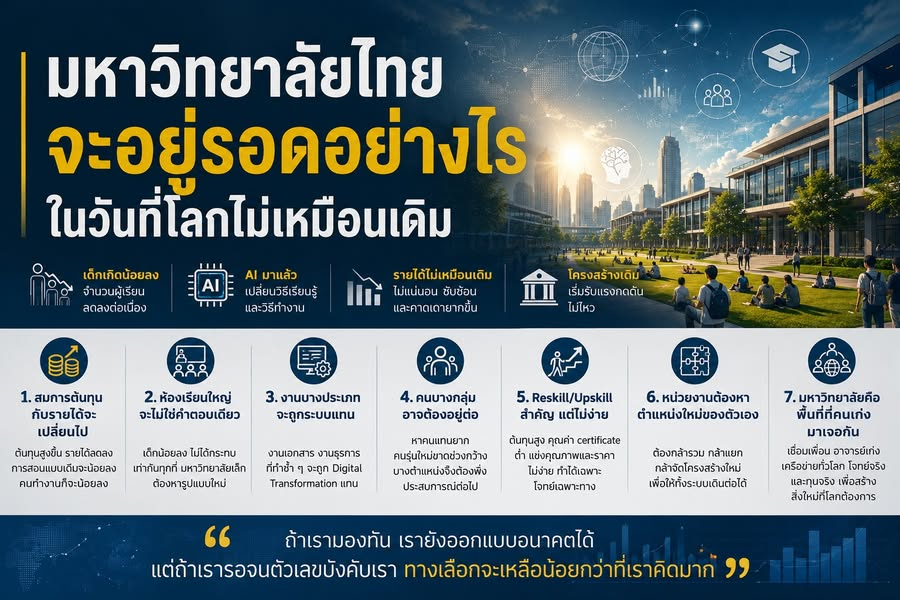

มหาวิทยาลัยไทยจะอยู่รอดอย่างไร ในวันที่โลกไม่เหมือนเดิม
{kind=link}

เด็กเกิดน้อยลง AI จะอยู่ต่อ Digital Transformation และ Data Governance จำเป็นขึ้นทุกวัน การหาคนมาเป็นอาจารย์ยากขึ้น และรายได้มหาวิทยาลัยซับซ้อนกว่าเดิม ทั้งหมดไม่ใช่เรื่องใหม่
ปัญหาคือ เราอาจรู้ทุกเรื่องอยู่แล้ว แต่ยังทำเหมือนมีเวลาเหลือมากพอ ทั้งที่แรงเปลี่ยนแปลงเหล่านี้กำลังประกอบกันเป็นสมการใหม่ของมหาวิทยาลัยไทย
1. สมการต้นทุนกับรายได้จะไม่เหมือนเดิม
ต้นทุนจะสูงขึ้น ขณะที่รายได้มีแนวโน้มลดลง เมื่อการถ่ายทอดเนื้อหาแบบเดิมจำเป็นน้อยลง สิ่งที่มหาวิทยาลัยยังต้องทำคือสร้างทักษะ ประสบการณ์ การทำงานร่วมกัน และเครือข่าย ซึ่งใช้การออกแบบและการดูแลเข้มข้นกว่าการบรรยายขนาดใหญ่
จำนวนอาจารย์และบุคลากรสนับสนุนจึงอาจลดลง ไม่ใช่เพราะใครอยากให้เกิด แต่เพราะต้องคิดก่อนที่ข้อจำกัดทางการเงินจะทำให้ไม่มีทางเลือก
2. เด็กเกิดน้อยลงไม่ได้กระทบทุกแห่งเท่ากัน
มหาวิทยาลัยใหญ่หรือมีความต้องการสูงอาจรับแรงกระแทกได้ดีกว่า มหาวิทยาลัยเล็กอาจต้องหารูปแบบที่ไม่ใช่การสอนแบบเดิม และคณะแต่ละแห่งจะได้รับผลไม่เท่ากัน
บางพื้นที่อาจยังดูปกติอยู่ระยะหนึ่ง จนตัวเลขผู้เรียน รายได้ และต้นทุนเริ่มบอกความจริงในระดับที่ไม่สามารถอธิบายหลบได้อีก
3. งานที่ระบบแทนได้จะถูกตั้งคำถามก่อน
Early retirement อาจถูกใช้เพื่อลดต้นทุน และตำแหน่งที่เสี่ยงก่อนคืองานซึ่ง Digital Transformation สามารถแทนได้ เช่น เอกสารหนึ่งใบที่ต้องผ่านโต๊ะตรวจห้าถึงเจ็ดโต๊ะ
ประเด็นไม่ใช่ว่าคนทำงานไม่มีคุณค่า แต่ workflow แบบเดิมแพง ช้า และอธิบายต่อคนรุ่นใหม่ยากขึ้น การเปลี่ยนจึงต้องออกแบบทั้งระบบงานและเส้นทางเปลี่ยนผ่านของคน ไม่ใช่เพียงซื้อซอฟต์แวร์
4. ในเวลาเดียวกัน บางคนอาจต้องอยู่ต่อเพราะหาคนแทนไม่ได้
ภาพที่ย้อนแย้งคือ บางตำแหน่งถูกลด แต่บางตำแหน่งอาจต้องต่ออายุการทำงานเพราะกำลังคนรุ่นใหม่ขาดช่วงและหาผู้แทนไม่ได้
หากไม่มีระบบถ่ายทอดงาน ความรู้ และบทบาทอย่างชัดเจน ความเสี่ยงจะไม่ได้อยู่เพียงที่จำนวนคน แต่อยู่ที่ความรู้สำคัญซึ่งหายไปพร้อมบุคคล
5. Reskill/Upskill สำคัญ แต่ไม่ใช่คำตอบวิเศษ
หลักสูตรทั่วไปต้องแข่งขันกับมหาวิทยาลัยต่างประเทศและแพลตฟอร์มระดับโลกทั้งด้านคุณภาพและราคา ส่วนเนื้อหาเฉพาะทางมีผู้เรียนจำกัด ทำให้ต้นทุนต่อรุ่นและความเสี่ยงในการเปิดคลาสสูง
ก่อนเปิดจึงต้องรู้ว่าใครต้องการอะไร ใครยอมจ่าย จ่ายเพื่อคุณค่าใด และหลังเรียนจะนำความสามารถไปใช้ตรงไหน การประกาศว่าจะทำ reskill/upskill โดยไม่มีคำตอบเหล่านี้ยังไม่ใช่โมเดลที่ยั่งยืน
6. หน่วยงานต้องหาตำแหน่งใหม่ของตัวเอง
เราอาจเห็นทั้งการรวมและแยกหน่วยงาน มหาวิทยาลัยซึ่งมีพื้นที่ดีแต่ขาดสาขาที่ตลาดต้องการอาจรวมกับสถาบันที่มีสาขาพร้อมแต่ขาดพื้นที่ ขณะที่คณะต้นทุนสูงซึ่งพึ่งการถัวเฉลี่ยจากคณะต้นทุนต่ำอาจต้องปรับโครงสร้างอีกแบบ
นี่เป็นเรื่องพูดยาก เพราะกระทบอัตลักษณ์ อำนาจ และความมั่นคง แต่การไม่ปรับอาจทำให้ทั้งระบบลำบากกว่าเดิม
7. มหาวิทยาลัยต้องตอบใหม่ว่าตนมีความหมายอะไร
มหาวิทยาลัยอาจกลับมาเป็นพื้นที่ที่คนเก่งและคนมีความสนใจใกล้กันได้พบกัน นักศึกษาได้เจอเพื่อน อาจารย์ เครือข่ายโลก ผู้ผลิต ผู้ใช้จริง และผู้ลงทุน ซึ่งนำโจทย์วิจัยขั้นสูงมาให้ร่วมกันคิด
หากมหาวิทยาลัยยังมีความหมายในอนาคต ความหมายนั้นไม่ใช่เพราะเป็นที่เก็บความรู้ แต่เพราะเป็นที่ที่คนเก่งมาเจอกัน และทำให้สิ่งที่คนคนเดียวทำไม่ได้เกิดขึ้นจริง
มองให้ทัน เพื่อยังมีสิทธิออกแบบ
ทั้งหมดนี้ไม่ใช่เรื่องน่ายินดีและไม่ควรใช้ขู่ใคร แต่เป็นเรื่องที่ต้องมองให้ทัน เพราะถ้าเห็นก่อน เรายังออกแบบการเปลี่ยนผ่าน จัดลำดับ และรักษาสิ่งสำคัญไว้ได้
หากรอจนตัวเลขบังคับ ทุกอย่างจะกลายเป็นการแก้ปัญหาเฉพาะหน้า และทางเลือกที่เหลือจะน้อยกว่าที่คิดมาก
บทความที่เกี่ยวข้อง มหาวิทยาลัยยังจำเป็นไหม ในวันที่ AI ทำข้อสอบแทนคนได้ เมื่อ content และการสอบไม่ใช่ฐานคุณค่าเดิม มหาวิทยาลัยยังสร้างสิ่งใดที่สังคมหาเองไม่ได้